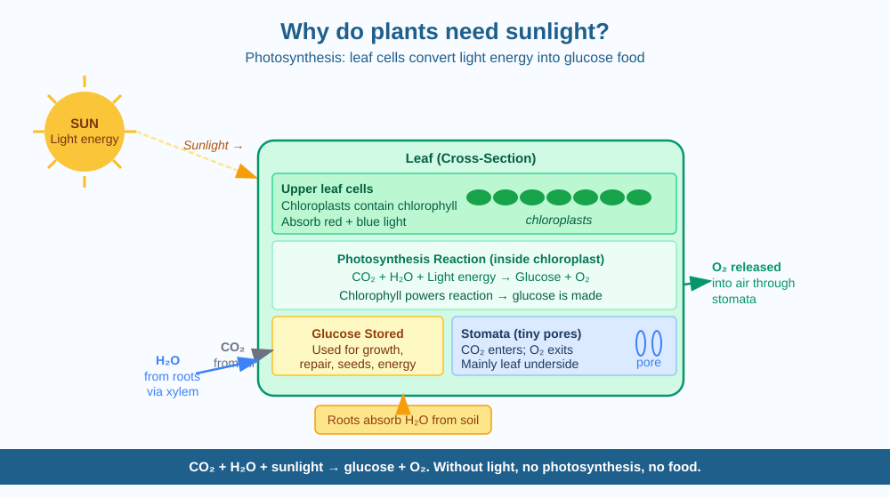

By the end of this lesson, you should be able to explain how plants use sunlight to make food, name the raw materials and products of photosynthesis, and predict what happens to a plant kept in complete darkness.
You can leave a plant alone for weeks and it will grow, make new leaves, produce flowers, and eventually seeds — all without eating anything. A cow must eat grass. You must eat food. But the plant just sits there, apparently building itself out of thin air and light. How does a plant make food from nothing visible?
Plants make their own food through a process called photosynthesis — one of the most important chemical reactions on Earth, and the foundation of almost every food chain.
What goes in:
What comes out:
Where it happens:
Photosynthesis takes place mainly in the leaves. Leaves are broad and flat (large surface area to catch light), thin (light can penetrate through the upper cells), and held at angles that face the sun. Chloroplasts are concentrated in the upper layer of cells, closest to the sunlight.
Why chlorophyll is green:
Chlorophyll absorbs red and blue wavelengths of light most efficiently — these carry the most usable energy. It reflects green light, which is why leaves and plants appear green to our eyes.
What happens without sunlight:
If there is no light, chlorophyll cannot absorb energy, so photosynthesis stops. The plant cannot make new glucose. It uses stored glucose and starch for a time, but once reserves are exhausted, it cannot grow, repair cells, or sustain itself. Leaves turn yellow as chlorophyll breaks down without light. The plant weakens, droops, and eventually dies.
Think of a leaf as a solar-powered food factory:
Raw materials arriving: CO₂ (from air, through stomata) + H₂O (from soil, through roots and stem)
Energy source: Sunlight captured by chlorophyll in chloroplasts
What the factory produces: Glucose (plant's food, stored as starch) + O₂ (released into air)
A plant is called an autotroph — it makes its own food from simple raw materials using energy from sunlight. Animals (including humans) are heterotrophs — we must eat other organisms to get energy, because we cannot photosynthesise.
The included SVG shows a cross-section through a leaf in the centre of the canvas:

Plants also carry out cellular respiration — the same basic process as animals — to release energy from glucose for their own cell activities. This happens in all plant cells, all the time, including at night.
During the day, photosynthesis runs much faster than respiration, so the plant is a net absorber of CO₂ and a net producer of O₂. At night, only respiration runs — the plant absorbs a small amount of O₂ and releases a small amount of CO₂.
Predict: If you placed a healthy plant with bright light in a perfectly sealed glass container, what would eventually happen to the CO₂ level inside? What would happen to the O₂ level? Would the plant survive long-term, and what would limit it?
What is the main reason plants need sunlight?
Why is understanding the mechanism of photosynthesis more useful than knowing that plants need sunlight?
If a plant were kept in complete darkness for several weeks, what would you predict would happen?
Look at the plants in your home or neighbourhood. Identify which are in direct sunlight, which are in partial shade, and which are far from windows. Observe their leaf colour (deep green vs. pale), leaf size, and overall appearance. Write three observations and connect each to the photosynthesis mechanism — for example, why might leaves in shade be larger and thinner than those in full sun?
The oxygen in every breath you take was once carbon dioxide. A plant — perhaps a blade of grass, a tree, or a microscopic algae cell in the ocean — absorbed that CO₂ from the air, used sunlight to split the water and CO₂ apart, and released the oxygen. Virtually all of the oxygen in Earth's atmosphere was produced by photosynthesis over billions of years. Before photosynthetic organisms evolved, Earth's atmosphere contained almost no free oxygen — and no animal life was possible.
Plants use sunlight to power a reaction that turns CO₂ from air and water from soil into glucose — their food — and release oxygen as a byproduct. Without light, the factory shuts down, reserves run out, and the plant cannot survive.